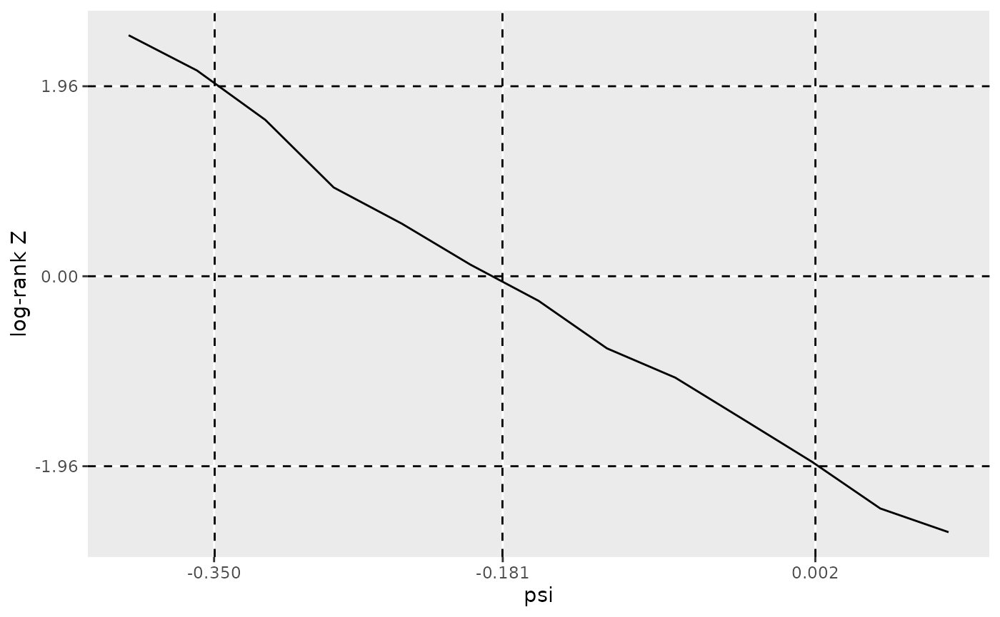
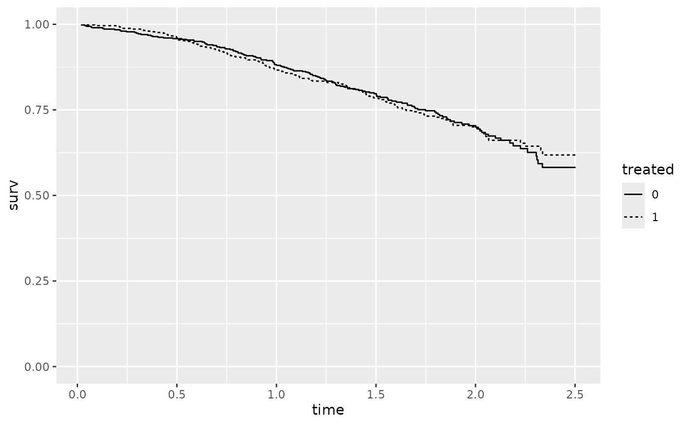

Introduction
In clinical trials, treatment switching occurs when patients in the control group switch to the experimental treatment after experiencing disease progression or other clinical criteria. While treatment switching can provide ethical benefits for trial participants, it introduces significant challenges in estimating the true effect of the experimental treatment on overall survival (OS). If left unadjusted, treatment switching can obscure the real difference between the treatment arms and lead to biased estimates, typically underestimating the treatment benefit.
The rank preserving structural failure time model (RPSFTM) is a statistical approach developed to address this issue. RPSFTM adjusts for the effects of treatment switching by modeling what the survival times of patients who switched treatments would have been if they had remained on the control treatment. The model assumes that the treatment effect is the same regardless of when the patient received the treatment.
The rank-preserving property means that the relative ordering of counterfactural survival times under the experimental treatment is the same as the relative ordering of counterfactural survival times under the control treatment. Formally, let \(Y_i^{a=1}\) represent the potential outcome for subject \(i\) under treatment condition \(a=1\) (experimental), and \(Y_i^{a=0}\) represent the potential outcome under treatment condition \(a=0\) (control). If the ranking of \(\{Y_i^{a=1}: i=1,\ldots,n\}\) is identical to the ranking of \(\{Y_i^{a=0}: i=1,\ldots,n\}\), we say that rank preservation holds.
The structural failure time model refers to a framework used to
estimate the true (unobserved) survival time in the absence of treatment
switching, assuming that the experimental treatment has a multiplicative
effect on survival. Specifically, each patient’s observed survival time,
\(T_i\), is divided into the time spent
on the control treatment, \(T_{C_i}\),
and the time spent on the experimental treatment, \(T_{E_i}\), such that \(T_i = T_{C_i} + T_{E_i}\). The
rx parameter in the rpsftm function represents
the proportion of time spent on the experimental treatment, defined as
the ratio \(T_{E_i}/T_i\). The
structural model for counterfactual untreated survival times is
expressed as \[U_{i,\psi} = T_{C_i} +
e^{\psi} T_{E_i},\] where there are three distinct cases for
one-way treatment switching from the control arm to the experimental
arm:
Experimental Group Patients: \(T_{C_i} = 0\), and \(T_{E_i}\) represents the time from randomization to either death or censoring.
Control Group Nonswitchers: \(T_{C_i}\) is the time from randomization to either death or censoring, and \(T_{E_i} = 0\).
Control Group Switchers: \(T_{C_i}\) is the time from randomization to treatment switch, and \(T_{E_i}\) is the time from the switch to either death or censoring.
Recensoring
The censoring time \(C_i\) must be defined for all patients including those who experience an event. We assume that censoring is non-informative in the absence of treatment switching, i.e., \(T_{L_i} \perp\!\!\!\perp C_i\), where \(T_{L_i}\) denotes the latent time to event for subject \(i\).
The observed time to event or censoring is given by \[T_i = \min(T_{C_i} + e^{-\psi}(T_{L_i} - T_{C_i}), C_i)\] with the event indicator \[\Delta_{i} = I(T_{C_i} + e^{-\psi}(T_{L_i} - T_{C_i})\leq C_i)\] For a patient who switches treatment, the counterfactual time to event or censoring is \[U_{i,\psi} = \min(T_{L_i}, T_{C_i} + e^{\psi}(C_i - T_{C_i}))\] and the event indicator can be rewritten as \[\Delta_{i} = I(T_{L_i} \leq T_{C_i} + e^{\psi}(C_i - T_{C_i}))\] However, treatment switching is often associated with poor prognosis for survival, i.e., \(T_{L_i}\) and \(T_{C_i}\) are correlated. Consequently, \(T_{L_i}\) and \(T_{C_i} + e^{\psi}(C_i - T_{C_i})\) are also correlated. As a result, using the sample \(\{(U_{i,\psi},\Delta_i)\}\) will generally produce a biased estimate of the survival distribution of \(T_{L_i}\).
To address this issue, we define a recensoring time that accounts for all possible switching times, \[ D_{i,\psi}^* = \min_{T_{C_i} \in [0, C_i]} \{T_{C_i} + e^{\psi}(C_i - T_{C_i})\} = \min(C_i, e^{\psi}C_i) \] The recensored time to event or censoring is \[U_{i,\psi}^* = \min(U_{i,\psi}, D_{i,\psi}^*) = \min(T_{L_i}, D_{i,\psi}^*)\] with the corresponding event indicator \[\Delta_{i,\psi}^* = I(U_{i,\psi} \leq D_{i,\psi}^*) = I(T_{L_i} \leq D_{i,\psi}^*)\] By construction, \(T_{L_i} \perp\!\!\!\perp D_{i,\psi}^*\), thus the sample \(\{(U_{i,\psi}^*,\Delta_{i,\psi}^*)\}\) provides an unbiased estimate of the survival distribution of \(T_{L_i}\).
It is important to note that if recensoring is applied only to switchers, the sample becomes \[U_{i,\psi}^{\dagger} = \min(T_{L_i}, D_{i,\psi}^* I(S_i=1) + C_i I(S_i=0))\] \[\Delta_{i,\psi}^{\dagger} = I(T_{L_i} \leq D_{i,\psi}^* I(S_i=1) + C_i I(S_i=0))\] where \(S_i\) is the indicator for treatment switching. Since \(S_i\) is correlated with \(T_{L_i}\), the resulting censoring time \(D_{i,\psi}^* I(S_i=1) + C_i I(S_i=0)\) is also correlated with \(T_{L_i}\). Therefore, using the sample \(\{(U_{i,\psi}^{\dagger}, \Delta_{i,\psi}^{\dagger})\}\) will lead to biased survival estimates.
This illustrates that recensoring must be applied to all patients in treatment arms where treatment switching occurs to obtain unbiased estimates of the survival distribution.
Common Treatment Effect Assumption
A key assumption for the validity of the RPSFTM is the existence of a
common treatment effect, meaning that the time ratio, \(e^{-\psi}\), remains constant regardless of
when treatment switching occurs. However, since treatment switching
often happens after disease progression, the treatment effect
post-progression may be weaker than the effect observed immediately
following randomization. To account for this in sensitivity analyses,
the treat_modifier parameter in the rpsftm
function can be set to a value between 0 and 1, effectively diluting
\(\psi\) by multiplying it by
treat_modifier.
Estimation of \(\psi\)
For a fixed value of \(\psi\), we
can construct the counterfactual untreated survival times \(U_{i,\psi}^*\) and the corresponding event
indicators \(\Delta_{i,\psi}^*\). The
psi_test parameter specifies the method used to estimate
\(\psi\).
When
psi_test = "logrank", a log-rank test (which may be stratified) is used to compare the counterfactual untreated survival times between the two treatment groups.When
psi_test = "phreg", a Cox proportional hazards model (which may also be stratified) is used to test for treatment differences while adjusting for baseline covariates.When
psi_test = "lifereg", an accelerated failure time (AFT) model is used to assess treatment differences, also adjusting for baseline covariates. If stratification factors are provided, they are converted into dummy variables and included as covariates in the AFT model for estimating \(\psi\).
In all cases, let \(Z(\psi)\) denote the Z-test statistic used to evaluate the treatment effect based on the counterfactual untreated survival times. Under the assumption that potential outcomes are independent of the randomized treatment group, the estimate of \(\psi\) is the value that makes \(Z(\psi)\) closest to zero. The confidence limits for \(\psi\) can be derived from the values of \(\psi\) that yield \(Z(\psi)\) closest to \(\Phi^{-1}(1 - \alpha/2)\) and \(\Phi^{-1}(\alpha/2)\), where \(\Phi(x)\) is the cumulative distribution function of the standard normal distribution and \(\alpha\) is the two-sided significance level.
The rpsftm function provides two methods for estimating
\(\psi\):
-
Grid search method: This divides the interval from
low_psitohi_psiinton_eval_z - 1subintervals and evaluates \(Z(\psi)\) atn_eval_zequally spaced points of \(\psi\) (including the endpointslow_psiandhi_psi). - Root-finding method: This method uses numerical techniques, such as Brent’s method, to find the value of \(\psi\) such that \(Z(\psi) = 0\) for the point estimate, \(Z(\psi) = \Phi^{-1}(1 - \alpha/2)\) for the lower confidence limit, and \(Z(\psi) = \Phi^{-1}(\alpha/2)\) for the upper confidence limit.
It is important to note that the solution for \(\psi\) may not be unique and may depend on the search interval and convergence tolerance.
Regardless of the method used for estimating \(\psi\), it is helpful to visualize the log-rank test statistic, \(Z(\psi)\), across a range of \(\psi\) values. Additionally, a Kaplan-Meier plot of the counterfactual survival times for the two randomized groups provides further validation of the estimated value of \(\psi\).
Estimation of Hazard Ratio
Let \(A_i\) denote the randomized treatment group and \(Z_i\) the baseline covariates for subject \(i\) (\(i=1,\ldots,n\)). Once \(\psi\) has been estimated, we can fit a (potentially stratified) Cox proportional hazards model to the following:
The observed survival times of the experimental group: \(\{(T_i,\Delta_i,Z_i): A_i = 1\}\)
The counterfactual survival times for the control group: \(\{(U_{i,\psi}^*, \Delta_{i,\psi}^*, Z_i): A_i = 0\}\) evaluated at \(\psi = \hat{\psi}\).
This allows us to obtain an estimate of the hazard ratio. The confidence interval for the hazard ratio can be derived by either
- Matching the p-value from the log-rank test for an intention-to-treat (ITT) analysis, or
- Bootstrapping the entire adjustment and subsequent model-fitting process.
Concorde Trial Example
We will illustrate the rpsftm function using simulated
data based on the randomized Concorde trial. In this trial, patients
with asymptomatic HIV infection were randomly assigned to either
immediate zidovudine treatment or deferred treatment. The primary
outcome was the time to disease progression or death.
An ITT analysis estimates the effect of immediately administering zidovudine compared to delaying its use. However, some patients in the deferred arm started zidovudine before developing symptoms, based on low CD4 cell counts—a marker of disease progression.
Data
The data are stored in the immdef data frame. Here’s a
snapshot of the data:
head(immdef, 10)
#> id def imm censyrs xo xoyrs prog progyrs entry
#> 1 1 0 1 3 0 0.000000 0 3.0000000 0
#> 2 2 1 0 3 1 2.652797 0 3.0000000 0
#> 3 3 0 1 3 0 0.000000 1 1.7378377 0
#> 4 4 0 1 3 0 0.000000 1 2.1662905 0
#> 5 5 1 0 3 1 2.122100 1 2.8846462 0
#> 6 6 1 0 3 1 0.557392 0 3.0000000 0
#> 7 7 1 0 3 0 2.189470 1 2.1894703 0
#> 8 8 0 1 3 0 0.000000 1 0.9226239 0
#> 9 9 0 1 3 0 0.000000 0 3.0000000 0
#> 10 10 0 1 3 0 0.000000 0 3.0000000 0For the immediate treatment arm, treatment crossover was not possible.
Subject 1 was censored at 3 years.
Subject 3 progressed at 1.74 years.
For the deferred treatment arm, treatment crossover was allowed.
Subject 2 crossed over at 2.65 years and was censored at 3 years.
Subject 5 crossed over at 2.12 years and progressed at 2.88 years.
Subject 7 progressed at 2.19 years without treatment crossover.
Analysis
We begin by preparing the data and then apply the RPSFTM method:
data <- immdef %>% mutate(rx = 1-xoyrs/progyrs)
fit1 <- rpsftm(
data, id = "id", time = "progyrs", event = "prog", treat = "imm",
rx = "rx", censor_time = "censyrs", gridsearch = FALSE, boot = FALSE)The log-rank test for an ITT analysis, which ignores treatment changes, produces a borderline significant p-value of \(0.056\).
paste0("P-value", " (", fit1$pvalue_type, "): ", formatC(fit1$pvalue, format = "f", digits = 4))
#> [1] "P-value (log-rank): 0.0556"Using a root-finding algorithm, we estimate \(\hat{\psi} = -0.181\), with a 95% confidence interval of \((-0.350, 0.002)\).
c(fit1$psi, fit1$psi_CI)
#> [1] -0.181177491 -0.349656153 0.002047545The plot of \(Z(\psi)\) versus \(\psi\) shows that the estimation process worked well.
psi_CI_width <- fit1$psi_CI[2] - fit1$psi_CI[1]
ggplot(fit1$eval_z %>%
filter(psi > fit1$psi_CI[1] - psi_CI_width*0.25 &
psi < fit1$psi_CI[2] + psi_CI_width*0.25),
aes(x=psi, y=Z)) +
geom_line() +
geom_hline(yintercept = c(0, -1.96, 1.96), linetype = 2) +
scale_y_continuous(breaks = c(0, -1.96, 1.96)) +
geom_vline(xintercept = c(fit1$psi, fit1$psi_CI), linetype = 2) +
scale_x_continuous(breaks = round(c(fit1$psi, fit1$psi_CI), 3)) +
ylab("log-rank Z") +
theme(panel.grid.minor = element_blank())
The Kaplan-Meier plot of counterfactual survival times supports the estimated \(\hat{\psi}\).
ggplot(fit1$kmstar, aes(x=time, y=surv, group=treated,
linetype=as.factor(treated))) +
geom_step() +
scale_linetype_discrete(name = "treated") +
scale_y_continuous(limits = c(0,1))
The estimated hazard ratio from the Cox proportional hazards model is \(0.761\), with a 95% confidence interval of \((0.575, 1.007)\), constructed to be consistent with the p-value from the log-rank test for the ITT analysis.
c(fit1$hr, fit1$hr_CI)
#> [1] 0.7610992 0.5754769 1.0065948